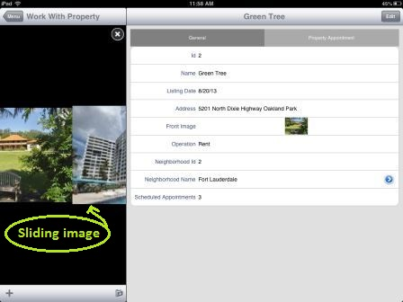
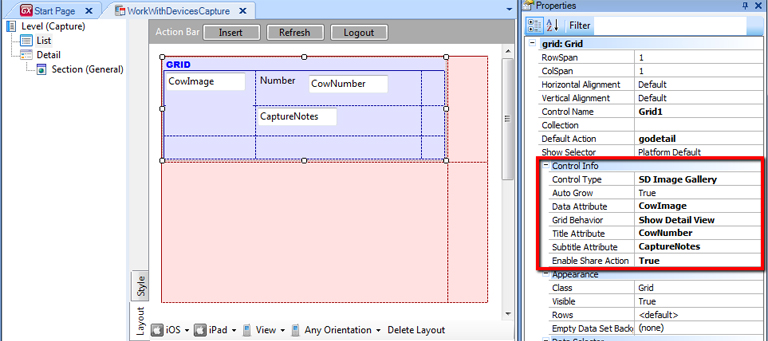
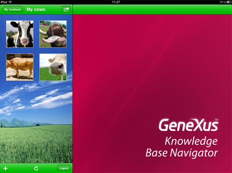
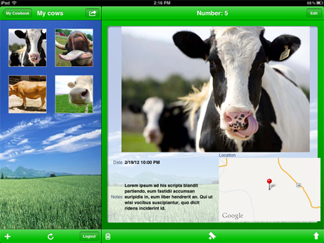
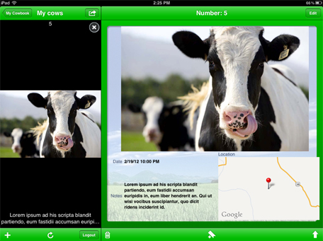
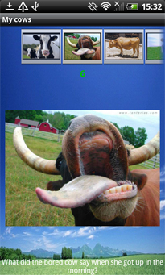

HowTo: Using SD Image Gallery Control
Warning: This control is deprecated since GeneXus 16 Upgrade 11 .
The Smart Devices SD Image Gallery control provides an elegant way for displaying pictures and interacting with them as an alternative of the default Grid control. The data of that list has to have a field based on the Image data type, that data would be used for the control to display the images in a nicer way. The control's run-time behavior depends on the values of some properties and on the platform where the app is running. As you will be able to see you can change some properties to configure how the image gallery is going to show its elements and also which extra information you´ll be able to see. A key point of this control is that, even though it is shown as an image gallery, the collection of items still behaves like a list. This means that you can go to the detailed view of each item with just one, execute the default list actions (add, update, delete items) and customize the actions executed as if it were a regular list. i Using the ControlTo set the control first apply the Work With object (WWSD) pattern to a Transaction object. Then the next step is to go to the Grid properties, where you will find the Control Type property, which by default has the empty value. Choose SD Image Gallery for this property. The next step is to set the Data Attribute to the image attribute you want the image gallery to show for each element of the Grid. In the image below there is an example of how to set these properties for this example.  At this point, if you run the app you'll get the default look and feel of the image gallery. PropertiesProperties which can let you customize the behavior and looks of the Image Gallery
ExamplesWith grid behavior: Detail View  Tapping over the small image you can go to the detail view of the item.  With the grid behavior on the full image, first, you see all the pics as a detail view but when tapping over the one you can go to a big picture and slide with a gesture to the following big picture. When tapping over the big picture you can see the detailed view of the item.  On Android, is a temporal restriction that this is how it looks no matter the grid behavior property.  Take a look at this Gallery in the MyCowBook NotesFor AndroidTo change the background color on this control you have to set the Grid\Background Color class on the Android Theme. For IOSTo change the background color of the Detail View on this control you have to set the Grid\Background Color class on the IOS Themes. AvailabilityThis feature is available as of GeneXus X Evolution 2 Upgrade 5 Videos
|